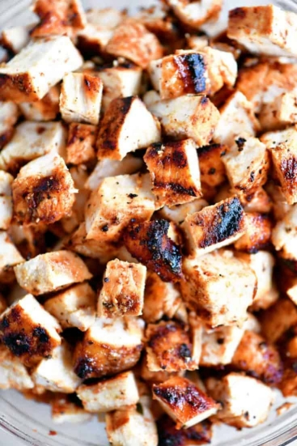

Chipotle Chicken
This juicy Chipotle Chicken can be prepped and cooked almost immediately or marinated for longer for super convenient and sensationally delicious dinner. The Wet Rub is quick and easy and tastes better than any restaurant!
Ingredients
- 2-3 chicken breasts pounded thin (1 pound)
- CHIPOTLE CHICKEN RUB
- 2 tablespoons olive oil
- 1 teaspoon chipotle chili powder
- 1/2 teaspoon chili powder
- 1/2 teaspoon ground cumin
- 1/2 teaspoon smoked paprika
- 1/2 teaspoon onion powder
- 1/2 teaspoon garlic powder
- 1/2 teaspoon salt
- 1/4 teaspoon pepper
- 1 tablespoon lime juice
Steps
- In a small bowl, whisk chicken rub ingredients together and rub evenly all over chicken breasts. Time permitting, allow chicken to sit for 30 minutes at room temperature or refrigerate up to 8 hours then bring to room temperature before cooking.*
- STOVETOP DIRECTIONS
- If chicken has been refrigerated, let sit at room temperature for 15-30 minutes (time permitting).
- Heat a large non-stick skillet over medium high heat. Once very hot, add chicken and cook, undisturbed for 3-5 minutes, or until nicely browned (or blackened if you prefer) on one side. Turn chicken over, cover, and reduce heat to medium. Cook for approximately 5-7 more minutes (depending on thickness of chicken), or until chicken is cooked through. Remove to a cutting board and let rest 5 minutes before slicing.
- GRILLING DIRECTIONS
- If chicken has been refrigerated, let sit at room temperature for 15-30 minutes (time permitting).
- Meanwhile, grease and preheat the grill to medium heat, 375-450°F.
- Grill chicken undisturbed for 5-7 minutes per side, or until chicken is cooked through. (An inserted thermometer should read 165 degrees F.)
- Remove chicken from grill and let rest 5 minutes before slicing.